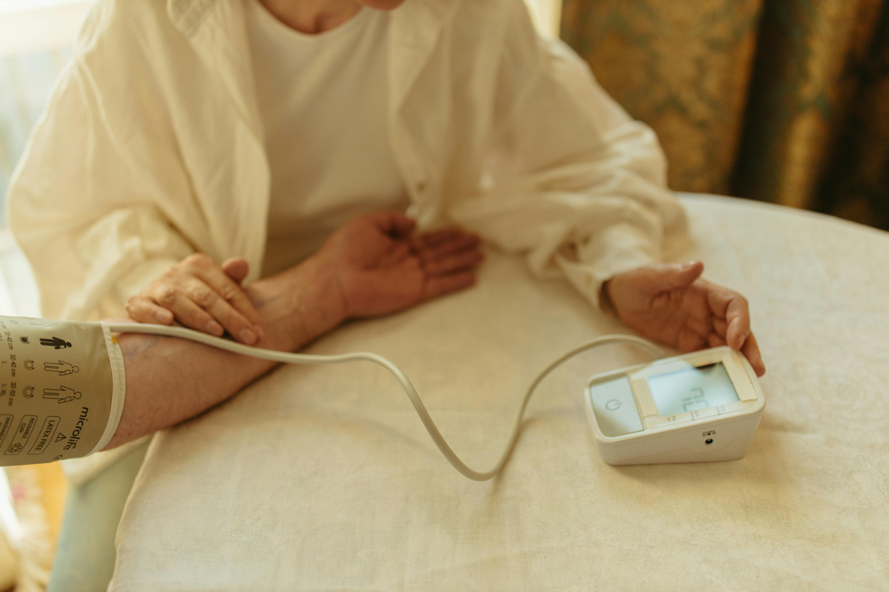

Carole Exquis
À vos côtés, chez vous !
Double compétence : Auxiliaire de santé CRS & Employée de commerce CFC
Discutons de vos besoinsMes Accompagnements
Un accompagnement de qualité, humain et sur mesure, axé sur le respect, l'empathie, la bienveillance et la confidentialité.

Soins & Confort
- Soins corporels
- Aide au coucher / lever / habillage
- Soutien moral
- Présence et écoute attentive

Domicile & Repas
- Aide aux courses et aux repas
- Aide à la mobilité
- Transport
- Entretien courant du logement

Administration
- Démarches administratives
- Gestion du budget et des factures
- Appui organisationnel
- Déclaration d’impôt

Qui suis-je ?
Forte d'une double compétence unique d'Auxiliaire de santé CRS et d'Employée de commerce CFC, j'interviens directement à votre domicile pour simplifier votre quotidien et vous apporter sérénité.
Mon approche se veut globale : qu'il s'agisse d'un soutien physique, d'un moment de partage chaleureux ou d'une aide rigoureuse dans vos papiers administratifs, je m'adapte précisément à votre rythme et à vos habitudes.
Contact
Secteurs : Entremont - Martigny
Une question ? Un besoin particulier ? N'hésitez pas à me contacter directement par téléphone ou par e-mail.